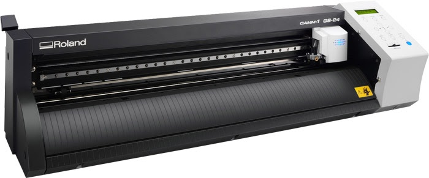
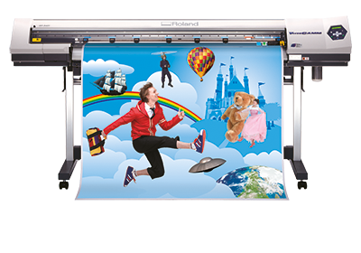
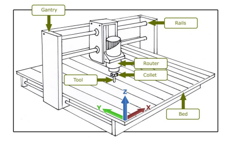
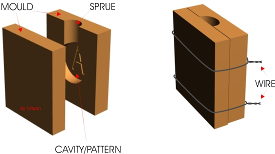
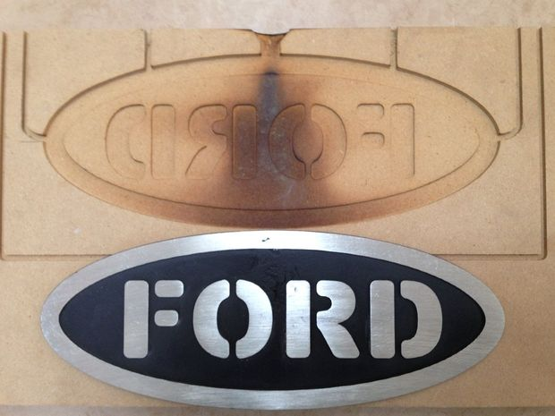

Vinyl cutting is the process of contour cutting vinyl. The vinyl application can be used for many purposes including signs, stickers, van decals and much more. CTIC has several machines capable of cutting vinyl and you will use two of the machines during this unit. You continue your use of CorelDraw to create the vector file that will be contour cut by the Roland GS-24 Camm 1 vinyl cutter. We will also use the Roland 540i wide format cutter/ printer to create two different stickers using cut contour. The Roland 540i is capable of printing posters, stickers and banners. You will set up your job using CorelDraw and create two multi-color stickers that are contour cut.

How To Use The WRA Roland GS-24
CNC Milling and Casting
How To Use The WRA Roland MDX-40A Guide 
1. Using the Roland GS-24 CAMM 1, cut a minimum of two one color vinyl stickers to decorate your notebook. The notebook must have at least two different one color stickers adorning the front, back or inside covers.
2. Create two different full color cut contour stickers to be cut and printed using the Roland 540i printer. They must be print and cut. See the instructions guide above for how to create the stickers using cut contour or PowerClip.
3. Document how you created each sticker. Why did you create each sticker? What was the thought process when you created your notebook? What was the most challenging part of the process? What did you learn in the process? Include photos and original files.
1. Design an 3D ORIGINAL .stl file to use in the MDX40A.
2. Mill the part using subtractive manufacturing using the MDX40A. You will mill in wax. It should be designed for a 3"x3"x .5" or 3"x2"x.5"
3. Create a mold using Smooth-Sil 960.
4. Cast a chocolate part. Document the project by including all original files and including pictures of the process. Describe the biggest challenge you encountered as you created the mold.